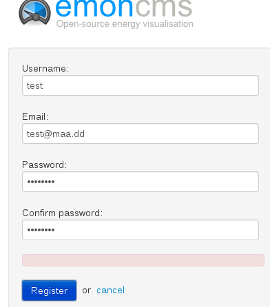

As the Apt-get method isn't up and running I tried the git method on a newly installed Debian 7, but no luck. I'm new to linux so I followed the guide step by step.
Following the guide fails as there is no SQL user created. So I created a user with all privilige(just for test) and continued.
At the end I'm able to see the emonCMS loginprompt in the browser but trying to create a user just gives we a red bar with no error.
Whats wrong? has the git guide be reviewed lately?
new install on Debian not working
Submitted by haden on Tue, 12/08/2014 - 06:28Hi
As the Apt-get method isn't up and running I tried the git method on a newly installed Debian 7, but no luck. I'm new to linux so I followed the guide step by step.
Following the guide fails as there is no SQL user created. So I created a user with all privilige(just for test) and continued.
At the end I'm able to see the emonCMS loginprompt in the browser but trying to create a user just gives we a red bar with no error.
Whats wrong? has the git guide be reviewed lately?

Thanks
Kim